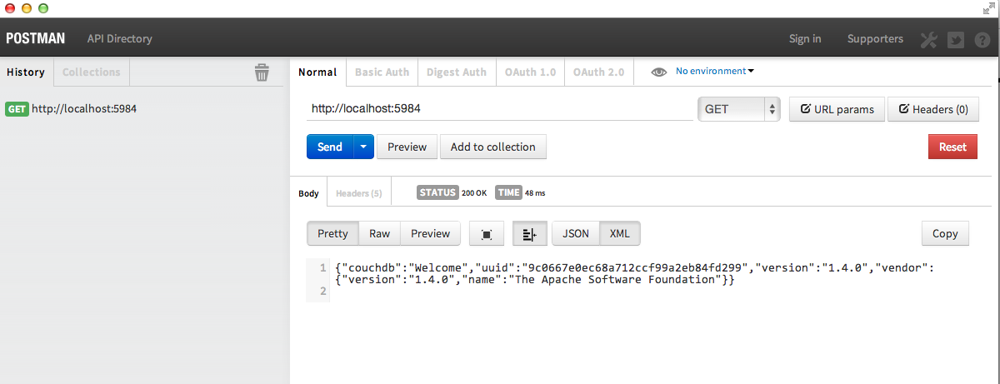

CouchDb
BootCamp
Created by Tom Wilson / @twilson63

Introductions
- Your Name
- Expectation of the class
- Favorite Programming Language

About Me
- @twilson63
- Less is more
- <3 the Web
- <3 Coding
- <3 Javascript
About the Mac
- App Menu is at the top of the screen
- Wifi settings are on the top right
- Instead of `Ctrl` use `Command`
- Command-Tab switches apps

- What is CouchDb?
- Getting Started
- Document Storage
- Views/Queries
- Build an App
- Replication
- Security
- In the wild
What is CouchDb?
CouchDb is a database that completely embraces the web. No proprietary drivers, just http and javascript.
Think Different
CouchDb makes you think differently about your data.

Overview
- Document Storage
- ACID Properties
- Compaction
- Views
- Security and Validation
- Distributed Updates and Replication
Document Storage
JSON Documents

Named Document Storage/RESTful

Document Update Model
- Lockless
- Optimistic
ACID Properties
- Atomic Consistent Isolated and Durable
- Reads use MVCC Model
- Index via B-Trees
Document Commits
- All document data and associated index updates are synchronously flushed to disk.
- The updated database header is written in two consecutive, identical chunks to make up the first 4k of the file, and then synchronously flushed to disk.
Compaction
Wasted space can be recovered by occasional compaction.
Views
Add structure to un-structured data.
Security and Validation
Administrator Access
Update Validation
Distributed Updates and Replication
CouchDb is a peer based distributed system.
- Conflicts
- Applications
Getting Started

Installing CouchDb
couchdb.apache.orgSelect Downloads
Follow Instructions
http://docs.couchdb.org/en/latest/install/index.htmlUp and Running
curl http://127.0.0.1:5984


Futon
Admin Console
Tour
Create Database
Add Document
Update Document
Delete Document
Exercise
Using futon, create a database with your name, add a document, update the document, delete the document.
Document Storage

List Dbs
curl -X GET http://127.0.0.1:5984/_all_dbsCreate Database
curl -X PUT http://127.0.0.1:5984/fooList Dbs
curl -X GET http://127.0.0.1:5984/_all_dbsAdd Document
curl -X POST http://127.0.0.1:5984/foo \
-d '{"hello":"world"}' \
-H "Content-Type: application/json"Get Document
curl -X GET http://127.0.0.1:5984/foo/:idUpdate Document
curl -X PUT http://127.0.0.1:5984/foo/:id -d '{"_rev": "1-1233456789", "goodbye":"moon"}' -H "Content-Type: application/json"Delete Document
curl -X DELETE http://127.0.0.1:5984/foo/:id?rev=[rev]Delete Database
curl -X DELETE http://127.0.0.1:5984/fooAdd Binary Attachments
curl -vX PUT http://127.0.0.1:5984/foo/:id/foo.jpg?rev=[rev]
--data-binary @artwork.jpg -H "Content-Type:image/jpg"
Get Binary Attachments
curl -X GET http://127.0.0.1/foo/:id/foo.jpgExercise
Create a Document and add and attachment to the document
Then use curl or postman to get that image.
Finally delete the document.
Views/Queries

Design Docs
Map
Reduce
Keys
etc
Build an App

Updates
Replication

CouchDb syncs databases locally or remotely.
Create Replication
curl -X PUT http://127.0.0.1:5984/bar
curl -vX POST http://127.0.0.1:5984/_replicate \
-d '{"source":"foo","target":"bar"}' \
-H "Content-Type: application/json"
Exercise
Create a dev account on IrisCouch and create a database called foo.
http://iriscouch.comCreate a local database called foo_local.
Create a replication from iriscouch foo to localhost foo_local
Then create a replication path from localhost to iriscouch
Add a sample document on the foo_local
Confirm that it was placed in foo on iriscouch
Now add a document on foo@iriscouch and confirm that is is on local
Filters
Things to know
Security

Admin Party

Admin Privileges
- Creating a database (PUT /database)
- Deleting a database (DELETE /database)
- Setup a database security (PUT /database/_security)
- Creating a design document (:put:`PUT /database/_design/app `)
- Updating a design document (:put:`PUT /database/_design/app?rev=1-4E2 `)
- Deleting a design document (:delete:`DELETE /database/_design/app?rev=2-6A7 `)
- Execute a temporary view (POST /database/_temp_view)
- Triggering compaction (POST /database/_compact)
- Reading the task status list (GET /_active_tasks)
- Restarting the server (:POST /_restart)
- Reading the active configuration (GET /_config)
- Updating the active configuration (PUT /_config/section/key)
Basic Authentication
Cookie Authentication
Users Db and Documents
Configuration
In the wild

Hood.ie
Slides
Not a coder? No problem. There's a fully-featured visual editor for authoring these, try it out at http://slid.es.
Point of View
Press ESC to enter the slide overview.
Hold down alt and click on any element to zoom in on it using zoom.js. Alt + click anywhere to zoom back out.
Works in Mobile Safari
Try it out! You can swipe through the slides and pinch your way to the overview.
Marvelous Unordered List
- No order here
- Or here
- Or here
- Or here
Fantastic Ordered List
- One is smaller than...
- Two is smaller than...
- Three!
Transition Styles
You can select from different transitions, like:
Cube -
Page -
Concave -
Zoom -
Linear -
Fade -
None -
Default
Themes
Reveal.js comes with a few themes built in:
Default -
Sky -
Beige -
Simple -
Serif -
Night
Moon -
Simple -
Solarized
* Theme demos are loaded after the presentation which leads to flicker. In production you should load your theme in the <head> using a <link>.
Global State
Set data-state="something" on a slide and "something"
will be added as a class to the document element when the slide is open. This lets you
apply broader style changes, like switching the background.
Custom Events
Additionally custom events can be triggered on a per slide basis by binding to the data-state name.
Reveal.addEventListener( 'customevent', function() {
console.log( '"customevent" has fired' );
} );
Slide Backgrounds
Set data-background="#007777" on a slide to change the full page background to the given color. All CSS color formats are supported.
Image Backgrounds
<section data-background="image.png">Repeated Image Backgrounds
<section data-background="image.png" data-background-repeat="repeat" data-background-size="100px">Background Transitions
Pass reveal.js the backgroundTransition: 'slide' config argument to make backgrounds slide rather than fade.
Background Transition Override
You can override background transitions per slide by using data-background-transition="slide".
Clever Quotes
These guys come in two forms, inline:
“The nice thing about standards is that there are so many to choose from”
and block:
“For years there has been a theory that millions of monkeys typing at random on millions of typewriters would reproduce the entire works of Shakespeare. The Internet has proven this theory to be untrue.”
Pretty Code
function linkify( selector ) {
if( supports3DTransforms ) {
var nodes = document.querySelectorAll( selector );
for( var i = 0, len = nodes.length; i < len; i++ ) {
var node = nodes[i];
if( !node.className ) {
node.className += ' roll';
}
}
}
}
Courtesy of highlight.js.
Intergalactic Interconnections
You can link between slides internally, like this.
Fragmented Views
Hit the next arrow...
... to step through ...
any type- of view
- fragments
Fragment Styles
There's a few styles of fragments, like:
grow
shrink
roll-in
fade-out
highlight-red
highlight-green
highlight-blue
Spectacular image!

Export to PDF
Presentations can be exported to PDF, below is an example that's been uploaded to SlideShare.
Take a Moment
Press b or period on your keyboard to enter the 'paused' mode. This mode is helpful when you want to take distracting slides off the screen during a presentation.